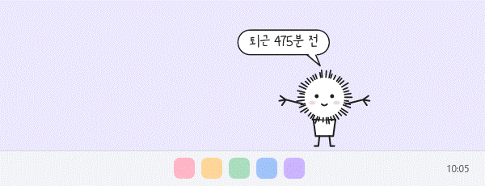
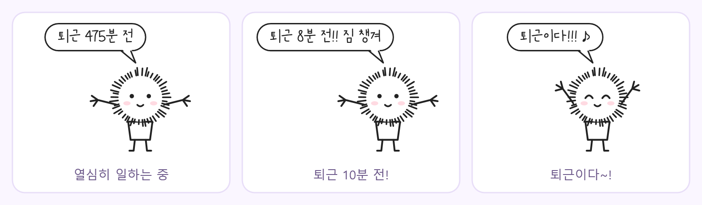
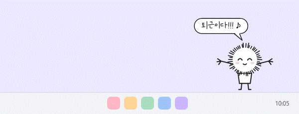
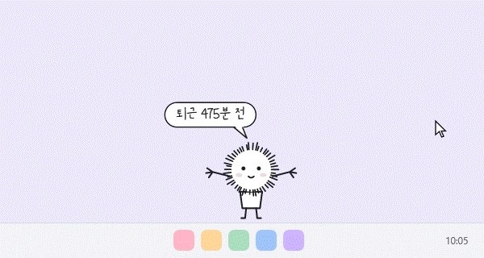
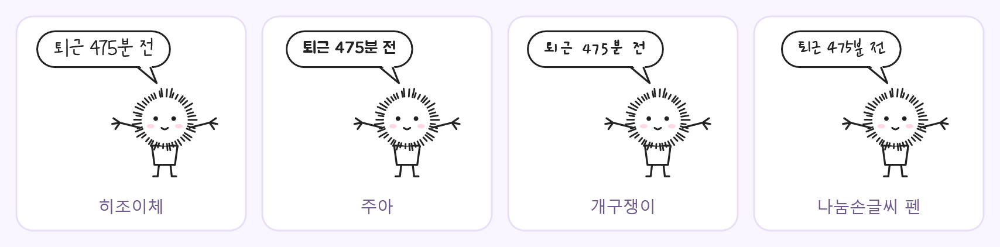
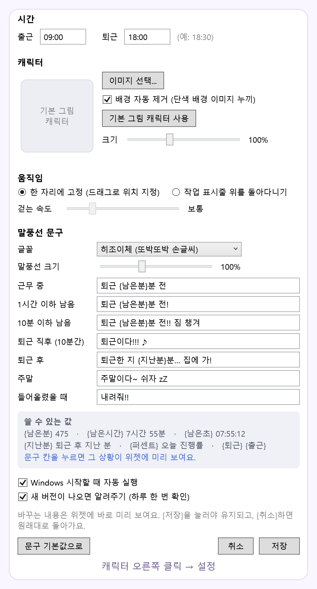

이런 요정이에요
일하는 동안 조용히, 퇴근 시간엔 신나게!

남은 시간 말풍선
"퇴근 475분 전"처럼 남은 시간을 계속 알려줘요.
똑똑 알림
퇴근 10분 전, 그리고 퇴근 시간엔 윈도우 알림까지 와요.
퇴근 축하
퇴근 시간이 되면 웃는 얼굴로 방방 뛰어요.
오늘 진행률
마우스를 올리면 정확한 남은 시간과 오늘 몇 % 일했는지 보여요.

작업 표시줄 산책
작업 표시줄 위를 총총총 걸어 다녀요. 가끔 멈춰서 쉬기도 하고, 휙 돌아서 반대로 가기도 해요.
퇴근 시간이 되면? 신나서 2.5배 빠르게 뛰어다녀요 🏃💨
한 자리에 가만히 있게 하고 싶다면 설정에서 고정으로 바꾸면 돼요.
들어올리면…
마우스로 꾹 잡아서 들어올리면 버둥버둥 내려줘!!
놓아주면 작업 표시줄로 톡 떨어져서 휴~ 하고 다시 걸어가요.

내 맘대로 꾸미기
캐릭터를 오른쪽 클릭 → 설정. 바꾸는 내용은 저장 전에 바로 미리 보여요 👀
캐릭터 이미지
좋아하는 이미지로! 단색 배경은 자동 누끼
말풍선 문구
상황별로 마음대로 써요
글꼴
귀여운 손글씨 글꼴 4종
크기
캐릭터, 말풍선 따로따로
움직임
고정 또는 산책, 걷는 속도까지

⚙️ 설정 화면 구경하기

설치는 1분이면 끝
관리자 권한도, 따로 깔 프로그램도 필요 없어요.
파일 받기
위의 무료로 받기 버튼을 눌러 OffWorkFairy.zip 을 받아요.
압축 풀기
받은 파일을 오른쪽 클릭 → 모두 압축 풀기를 눌러요.
install 더블클릭
풀린 폴더에서 install.cmd 를 더블클릭하면 끝! 화면 오른쪽 아래에 요정이 나타나요 🎉
개인이 만든 프로그램이라 서명이 없어서 뜨는 안내예요. 이렇게 하면 돼요.
- 창 안의 추가 정보 글씨를 눌러요.
- 아래에 생긴 실행 버튼을 눌러요.
업데이트는 알아서
새 버전이 나오면 요정이 먼저 알려줘요. 캐릭터 오른쪽 클릭 → 새 버전으로 업데이트 한 번이면 끝! 설정이랑 캐릭터는 그대로예요.
지우고 싶을 땐
Windows 설정 → 앱 → 설치된 앱 → "퇴근 요정" → 제거를 누르면 깔끔하게 지워져요.
자주 묻는 질문
정말 무료예요?
네, 완전 무료예요. 광고도 없어요.
회사 컴퓨터에도 설치할 수 있나요?
관리자 권한 없이 설치돼서 대부분 괜찮아요. 다만 회사 보안 정책으로 PowerShell 실행이 막혀 있는 컴퓨터에서는 동작하지 않을 수 있어요. 걱정되면 회사 IT 담당자에게 먼저 물어봐 주세요.
제 정보를 어딘가로 보내나요?
아니요. 아무 정보도 모으거나 보내지 않아요. 인터넷은 하루 한 번 새 버전이 있는지 확인할 때만 GitHub에 잠깐 접속하고, 이것도 설정에서 끌 수 있어요.
캐릭터를 다른 그림으로 바꾸고 싶어요.
캐릭터 오른쪽 클릭 → 설정 → 이미지 선택에서 원하는 이미지를 고르면 돼요. 흰색처럼 한 가지 색 배경은 자동으로 지워줘요. 배경이 복잡한 사진은 윈도우 그림판의 [배경 제거] 기능으로 배경을 지운 뒤 PNG로 저장해서 넣어 주세요.
요정이 사라졌어요!
시작 메뉴에서 퇴근 요정을 찾아 실행하면 다시 나타나요. 컴퓨터를 켤 때마다 자동으로 나오게 하려면 설정에서 Windows 시작할 때 자동 실행을 켜 주세요.
맥(Mac)에서도 되나요?
아쉽지만 지금은 Windows 10 / 11 전용이에요.